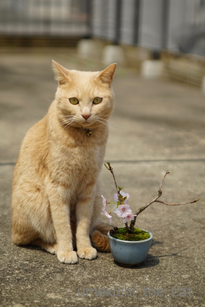
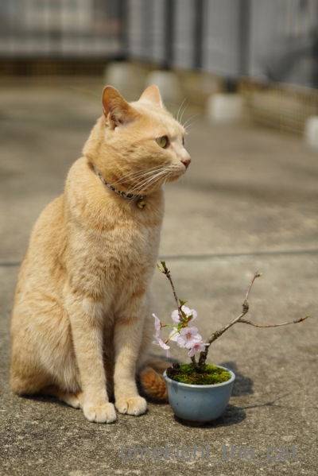
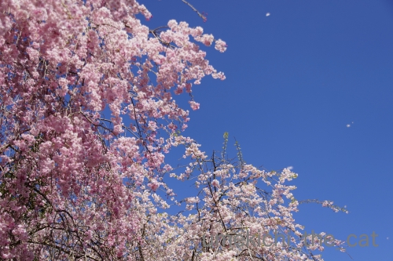

桜納め [梅吉]
関西の桜は八重桜も終盤。見納めの時期です。
そんな頃にようやく我が家の盆栽の桜が咲きました。
御殿場桜という品種です。

モデルさんに撮影協力していただきました＾＾
昨年秋の台風の影響でしょうか。今年の盆栽は花付きが悪いです。
咲かない鉢も多いのですよ(-_-メ)

この桜も枝の上の方は花が付きませんでした。残念！来年は復活してくれるかなぁ・・・
モデルさんは近所の神社の子供祭りの音が気になってしょうがない様子。

この日はもう初夏の陽気でした。ベランダにいると暑かったです。
眩しい日差しに梅吉もむっふ〜ん顔＾＾
今日は後半長いので梅吉話題はこの辺で！

週末、抜けるような青空のもと、咲き乱れる枝垂れ桜を見に行きました。
滋賀県甲賀市の山奥にあるMIHO MUSEUMです。
この美術館の設計のコンセプトは桃源郷とのこと。
本邦では桃ではなくやっぱり桜がふさわしいですよね！
う〜ん！素晴らしい！！
枝垂れ桜は満開のピークをちょっとだけ過ぎたかなと言う感じ。
風が吹くとひらひらと桜吹雪が舞って幻想的な光景が。

美術館の建屋に行くには銀色のトンネルを抜けていきます。
奥に見える屋根が美術館のエントランスです。
で、このトンネルは内側にアルミプレートを貼り付けてあるのだとか。
コンクリート特有の人の話し声や足音の反響が無く良い感じ。
そして、このトンネル一番の見所は
緩やかにカーブした道を進んでいくと
トンネル内に彩りが。照明では無いのですよ。
トンネル入り口付近の桜が反射して桜色に染まって見えるのです。
こういう反射になるようにアルミプレートの角度を調整してあるんですって。
トンネルが微妙にカーブして出口が見えないのもこの効果を高めるため
そして日常から非日常の空間に移動していく感覚を味わって欲しいという事なのでしょうか。
（この光景は美術館からの帰りの風景です。
美術館に向かう時はトンネル内で振り返るとこの景色が見えます）
設計したのはI・M・ペイ氏。
あのルーブル美術館のガラスのピラミッドを設計した方です。
美術館の建屋は山を穿つようにして作られているので全体像はわかりません。
残念ながらルーブルには行ったことはありませんが
ガラスのピラミッド内部はこんな感じかなと想像させられる美術館のエントランス天井部。
行った事のある方、いかがでしょうか。
ここに来たもう一つの目的が大徳寺の曜変天目を見ること。
曜変天目、『有閑倶楽部』がお好きな方、清四郎が割ったアレですw
世界に３点しかない曜変天目は東京・静嘉堂文庫美術館、大阪・藤田美術館
京都・大徳寺（龍光院）が所有しているのですが
大徳寺のものは公開されることが一番少ないと言われています。
曜変天目ってこんな茶碗です。
残念ながらこのパネル写真からは茶碗の素晴らしさの百分の一も伝わって来ません。
展示は人が少なくなるお昼頃を狙って40分くらい並んで見ることができました。
（土日の午前中だと１時間以上並ぶようです。）
この小さな椀の中に宇宙を感じると言う方も。
神秘的な美しさにしばし見とれました。深い色合いは表現のしようもなく・・・
角度によって色合い光り方が変化して行きます。
また見る機会があるかな。また見たいなぁ。
帰りはポーッと余韻に浸りながら今年見納めの桜の中を帰りました。
MIHO MUSEUMについてちょっとだけ・・・
MIHO MUSEUMは某新興宗教団体が作った美術館です。
新興宗教というもの、
ひいてはこの団体の教義について私は全く興味がないので調べていません。
興味のある方は検索してみてね。色々出てくるようですよ。
この美術館については教祖様の像があったり教義に基づいた展示があったら
ちょっと嫌だなぁとその点だけネットで調べて行きました。
ネットの情報からと実際に行ってみて思ったのは
教団の教義を思わせる物は一切なく極めて普通、まともな美術館と感じましたよ。
所蔵品も古代エジプト・ローマ・ペルシアと様々なものがあり
長くなるので省きますが見応えのある品が多かったです。
この美術館では天目茶碗も所蔵しています。
公式お墨付きは無いのですが「曜変天目」として常設展で展示していますよ。
この展覧会の期間中に大徳寺のものと見比べるのも良いのではないでしょうか＾＾
それぞれの価値の判断はご自分の感性で。
公式に曜変天目と認められているかどうかと
個人がそれぞれ感じる美しさはまだ別の話かなぁと思っています。
この美術館の成り立ちを聞いたことがあって
新興宗教関連の美術館ということで拒否反応を示して行かないなんて方がいたら残念と思い
美術館の背景と展示物の内容についてちょっとだけ書いてみました。
この美術館へのアクセス＆ランチ状況も話題にしようと思ったのですが長くなったので省きます。
行ってみたいと思う方がいらっしゃいましたらコメントにどうぞ。
私の分かる範囲でアドバイスなど＾＾
この場所、秋には紅葉が見事なんだとか。
冬は美術館に来るまでの狭い山道が危険で閉館しているそうです。
映えるトンネルと桜があるせいか例によってアジア系外国人が
バスを仕立てて団体で来てますが
静かな方が多く不快な感じは全く無かったです。
行ってみる価値あり美術館ですよ！
2019-04-22 00:00
nice!(76)
コメント(28)

カフェオレ色の梅吉

梅吉 2023年8月10日 永眠


梅吉と出会った譲渡会

犬猫の理由なき殺処分ゼロ
妄想広告
UMEKICHI 光

爆発的に早い！
時々攻撃的！
Thanks to Mr.Boss365
爆発的に早い！
時々攻撃的！
Thanks to Mr.Boss365

桜尽くしを堪能させていただきました。トンネルからの桜が特に鮮やかに見えますね。梅吉さんがきちんとお座りしてるのも偉いです。昔ルーブルは3日かけて見ました。ガラスのピラミッドは完全に透けているもので、地下に降りる入り口です。
by zombiekong (2019-04-22 01:20)
盆栽の桜がとっても可愛いです！
育てるの難しいですよねぇ。すごいなぁ。
そして桜納め！トンネルの向こうに見える桜、とっても幻想的で美しいですね。
それだけでなくすべてに見応えあって素晴らしいですね〜。
しかし、これは行きにくそうな場所だーーーー(;_;)
by ChatBleu (2019-04-22 06:14)
梅吉さんと梅のコラボ^^かわいいにゃあ^^
by ニコニコファイト (2019-04-22 06:40)
訂正^^梅吉さんと桜のコラボでした^^
by ニコニコファイト (2019-04-22 06:41)
こちらはまだ八重桜が頑張ってます＾＾
by ぽちの輔 (2019-04-22 07:10)
梅吉さん、可愛い盆栽の桜もお似合いですねぇ( ^ω^ )
モデルお疲れ様でした=(^.^)=
一面ピンクの桜も見事ですが、
トンネルにアルミプレート貼り付けて
ピンク色のトンネルにするなんて
素晴らしい発想ですねぇ♪( ´▽｀)
by ニッキー (2019-04-22 07:12)
青空に映える枝垂れ桜はお見事ですね！
こちらはやっと桜も満開になりつつあり、お花見日和になりました。
梅吉さん、立派にモデルを務めてますね。素晴らしい(^^)
by kou (2019-04-22 07:13)
梅吉さん、良い顔をして写ってますね！
モデルをちゃんとしていますね(^^)
by ma2ma2 (2019-04-22 08:03)
ほんとに美しい桜ですね〜〜
幽玄な桜を見て、神秘的な曜変天目。
こりゃ良い一日になりましたね♪
曜変天目は見ていて飽きないです。また見たいなあ。
MIHO MUSEUM、新興宗教が作った美術館なのですね！
全然知らなかった(笑)
大徳寺のものは、ほんっと公開されないから羨ましいわ^^
by リュカ (2019-04-22 09:31)
こんにちは。
梅吉君と御殿場桜、いい写真です。
「梅の盆栽だろう？」と梅吉君、ツッコミ入れそうです。
梅吉君の眩しそうなお顔、可愛いですね！！最高に癒されますね。
MIHO MUSEUMのトンネル演出素晴らしいですね。
反射で万華鏡風な映り込みが見れそうです？
I・M・ペイさん、まだ生きているんだ！！驚き！！
大徳寺の「曜変天目」、上から覗き込む展示でないのが珍しい感じです？
某新興宗教団体情報もありがとうです。
熱海のMOA美術館みたいな感じですね！？(=^･ｪ･^=)
by Boss365 (2019-04-22 12:10)
桜の横できちんとお澄ましできる梅吉さん、ほんとにヨイ子ですね(#^^#)
このお写真、4月のカレンダーにいいかもしれません！！
MIHOミュージアム、辺鄙なところでお客さん来るのかしら？と思っていたら大賑わいですね。
ピンクの枝垂桜、美しい～♪
トンネルの向こうに見える桜色の海は確かにこの世のものとは思えない雰囲気がありますね^^
これは行ってみたいです。桜は終わっちゃったから紅葉ですね！
by ゆきち (2019-04-22 12:57)
かわいい盆栽と見事な桜、どちらもステキですね。
トンネルが桜色に、、写真でもじゅうぶん見応えありですが
実際にみたら幻想的なんでしょうねえ。
by liang (2019-04-22 15:52)
梅吉さんと盆栽とっても絵になりますね(^^
盆栽を作れるなんて姐さんさすがっす(笑
MIHO MUSEUMは5年ほど前の桜の季節に佐川美術館とセットで
友人と行きました。
トンネル内の幻想的なライト桜の反射、つり橋を渡った先にあるんですよね。
新興宗教団体が設立したとは知りませんでした。
なんというか美術館を囲む風景とセットで丸ごと美術館という感じでした。
by marimo (2019-04-22 16:22)
梅吉さん、御殿場桜の横できちんとおすわり、賢いわ～＾＾
シャッター音に耳が反応？かと思ったら、子供祭りでしたか。
目を細めているのもいいショット＾＾
しだれ桜、見事ですね～！ トンネルの中にまで反映するなんて＾＾
ミュージアムもすごいっ！＾＾
曜変天目、退職後趣味で陶芸をやっていた父が憧れて真似しようとしてました。まあ少し斑の光沢があるぐらいの＾＾；
by sana (2019-04-22 16:25)
あーこの美術館、先日、テレビでやってましたね。
トンネルの壁に季節毎の色合いが映り込むのも、見せ場のようですね。
by tama (2019-04-22 19:31)
梅吉さんと桜の記念写真、なんと素敵なこと！
盆栽が趣味、渋くて流石です（笑）
MIHO MUSEUMすぐに訪れる新緑の青葉繁る季節には、また違った風景が見られるでしょう。
『曜変天目茶碗』綺麗です。
目の保養ができましたね。
by kiki (2019-04-22 19:45)
梅吉さん、いつになくおしとやかに見えます^^;
盆栽は良いですね。ミニ盆栽ですね。
「トンネルを抜けるとそこは桜の国だった」ですね＾＾
by riverwalk (2019-04-22 20:49)
3枚目の梅吉くんがお気に入り！「はる～～」って感じです(*´ω｀*)
by palpal (2019-04-22 21:08)
桜の鉢のそばでポーズをとって写る梅吉さん、素晴らしい！
なかなかこんな風には撮らせてくれません。
これぞまさしく「桜トンネル」ですね！
ソメイヨシノ、まだ花びらを付けている幹がありますが
さすがに皆さん飽きちゃったみたいです。^^;
by yes_hama (2019-04-22 22:03)
3枚目の梅吉くんの表情が～。
食べちゃいたいくらい可愛いですよ(≧▽≦)
by emi (2019-04-23 17:23)
モデルさんの三枚目の表情がなんとも可愛らしいでやすね(◎o◎)b
by ぼんぼちぼちぼち (2019-04-23 17:44)
ため息が出るほど美しい桜トンネルです
これで見納めですね(^^)
梅吉さんと盆栽さん なんか 良いね＾＾
最近のセロリ たしかに ニオイが薄い！
by チャー (2019-04-23 18:47)
御殿場桜の盆栽、かわいいですね。
小さい体ながらに、意外とお花は大きめ？
梅さまもいいお顔！
咲き乱れる枝垂れ桜もめちゃめちゃキレイ！
新興宗教・・・わたしだったらそれだけで毛嫌いして行かないかも・・・。
頭固くて損するタイプかもしれません^^;
by Ja-Kou66 (2019-04-23 23:43)
トンネルの設計、なるほどやわー。
いきなりどどーんと見えるより
はるかにドラマチック！！
by よーちゃん (2019-04-24 09:07)
すごくいいお写真ですねーー！！
イワゴーさんが撮られたお写真みたい❤
モデルさんがいいですしねーっ(*´艸｀*)
MIHO MUSEUMは何度か行きましたが
春はこんな感じなのですねーー！！知らなかったぁ＾＾
これは行かなきゃって思いますね♪
曜変天目、大好きなんです～(≧∀≦)
あの模様が肉球に見えて仕方ないっ(((*≧艸≦)ﾌﾟﾌﾟｯ
by カトリーヌ (2019-04-24 15:46)
zombiekongさん＞
トンネル出入り口付近の反射が
一番綺麗に見えるように設計されているのでしょうか。
お日様の照り具合によっても見え方が変わるので眺めていて飽きませんでした＾＾
わぉ〜！ルーブル３日間、美術品ざんまいだったですね。羨ましい・・・
ルーブルは所蔵品も桁違いに多いし
見ているうちに脳がいっぱいいっぱいになってくるので
脳を休ませる時間も含めると3日でも足りないかも。
ガラスのピラミッドは透けているのですね。
これも芸術作品ですね！
ChatBleuさん＞
盆栽はおっとの趣味なのです＾＾
小さい鉢ばかりなので大阪の厳しい夏の期間は水やりが難しくて
枯れちゃったりするのも多いので
それだけに花を咲かせてくれると嬉しいですよー＾＾
増やさないように、と言いつつも
どんどん増殖しているのはなんだかな、ですけどwww
MIHO MUSEUMはとびっきり辺鄙なところにあります。
なだけにとびっきり贅沢な空間だなって感じました。
駐車場には足立ナンバーの車なども止まってましたよー。
ニコニコファイトさん＞
そうそう！桜とのコラボなんですよ＾＾
梅の盆栽は意外と難しくてなかなか花が咲きませんw
ぽちの輔さん＞
ゴージャスな八重桜が頑張ってくれていると嬉しいですね！
まだまだ目の保養が出来そうです＾＾
ニッキーさん＞
モデルさんも頑張ってくれましたが
おとーさんが梅吉の座ったところに桜の鉢を持って動き回る、と
頑張ってくれましたよ＾＾
写真は梅吉とおとーさんの共同作品という感じでしょうか！
桜のトンネルは本当に素晴らしかったです。
桃源郷ってこんな感じかなぁと思わせてくれる眺めでした。
kouさん＞
kouさん地方にも春がやってきましたか！
雪が溶けて暖かくなって桜が咲く。
大阪では味わえない季節の移り変わり、羨ましくもあります＾＾
梅吉と盆栽の写真は鉢を持って梅吉を追いかける、と
人間も頑張りましたよー(≧▽≦)
ma2ma2さん＞
桜の鉢を持って梅吉を追いかけてくれた人（笑）
カメラの後ろで梅吉の気を引こうと頑張った人（笑）
それに付き合ってくれた人（被写体）と
みんなの共同作業でしたー！
リュカさん＞
本当に目と脳の保養（笑）になりました！
暑いくらいの日差しも気持ちよかったですよー＾＾
MIHO MUSEUMの背景情報はいらないかな・・・とも思ったのですが
それらしいコメントが入ってきてもねと思って一応書いておきました。
教団の体質はわからないけどこういう方面にお金を使ってくれるのは
私としてはありがたい、と思ってます。無責任かもしれないけど・・・
大徳寺の曜変天目、龍光院自体が公開してない塔頭だし
普段は関係者でこの茶碗を眺めながらお茶なんて立ててるのかしらー0(≧▽≦)0
羨ましい話ですwww
Boss365さん＞
梅吉と盆栽写真、梅吉なら
「うめでもさくらでもええねん わしにはなをそえるだけやからな」
とか言いそうですよ＾＾
梅の盆栽は意外と難しくて（鉢が大きくないとダメ？。うちは小品盆栽専門。）
枯れることが多いのです。
MIHOさんはどうやらMOAさんから分裂した団体みたいですよ！
権力争いや教義の事はわかりませんが
美術品収集という私たちにとってはありがたい事は
受け継いだようですね！
にしても財力がすごいなぁ・・・
by ちぃ (2019-04-27 16:21)
ゆきちさん＞
はい＾＾
お澄まししてる梅吉の所に一生懸命盆栽を持って移動しました！
カレンダー応募、もちろんこれでトライしてみます0(≧▽≦)0
MIHO MUSEUM、画像検索したら真っ赤なもみじが出てきますが
赤く染まったトンネルは見当たりませんでした。
シダレサクラの葉は紅葉しないのかな・・・
にても秋もきっと綺麗なはず。キリッとした空気の中を散策も楽しそうです＾＾
liangさん＞
桜の盆栽は今年は咲かないかな・・・と思ったのですが
桜の見納めの時期にちゃんと咲いてくれました＾＾
去年に引き続き梅吉とのツーショットが撮れて満足でーす。
桜のトンネル、肉眼で見る景色と写真で見るのとはまた違った味わいが！
それぞれに良さがあるように思いました(^_－)☆
marimoさん＞
盆栽はおっとの趣味なのですよー＾＾
私は時々水やり担当。
小さい鉢ばかりなので水切れしやすく
関西の過酷な夏を乗り切るのが毎年の課題ですw
佐川美術館も行ってみたい所です！
今回はアクセスの悪すぎる所だったので一箇所に絞りましたが
佐川美術館は彦根城とセットもいいなぁと思ってます。
桜の時期にそのうちに、でしょうか
sanaさん＞
鉢を持って梅吉のあとをついて歩きましたよ(*>艸<)おっとがw
おすわりしたところをすかさずパチリ！
カメラ目線をしてくれるように気をひく役は私が担当しましたwww
トンネルは桜の反射がなくても仄白く光る不思議な空間なんですが
桜が映った色は本当に綺麗でした。
桃源郷以上！？
お父様すごい！焼き物で多少なりとも斑の光沢が再現できたとは
かなりの腕をお持ちだったのではないでしょうか！！
陶芸、私は手が小さくて力がなく菊練りがうまく出来ずに挫折しました(⌒-⌒; )
tamaさん＞
あんなにフォトジェニックならテレビ局が来ちゃうのも頷けます！
台湾や中国の放送局も来るらしく
ますます人が押し寄せるのでしょうねーwww
kikiさん＞
盆栽はおっとの趣味でーす＾＾
私は鑑賞＆時々水やり＆（梅吉と写すなら）こんなのいいんじゃない
と口を出すだけですwww
MIHO MUSEUM、山が深いところなので新緑も清々しくて気持ち良さそうです！
閉館している期間も長いのでもしも行かれる時は
開館日を確認してみてくださいね＾＾
曜変天目は本当に引き込まれる美しさです。
藤田美術館所蔵のものが奈良の国立博物館で展示中ですよ！
こちらも近々行く予定でーす。
あ、藤田美術館自体はkikiさんのお家から近そうですね。
（ただいま閉館中ですが）
by ちぃ (2019-04-28 16:18)
riverwalkさん＞
トンネルの向こうは本当に桜の国でした！
夢のようでしたよー＾＾
一年に一度の桜の季節、梅吉も思うところがあるのでしょうか(*>艸<)
palpalさん＞
梅吉も日差しをいっぱいに浴びて春を満喫です＾＾
yes_hamaさん＞
梅吉がおとなしく座った所に鉢を持って移動しましたよ＾＾
「ここに座って」ってお願いしても聞いてくれませんから〜(*>艸<)
桜は咲き始めのワクワク感と花吹雪が始まる頃が命でしょうか。
桜の命も短いけれどみなさん興味をなくすのも早いかな(^_^;)
この季節は次々花が咲き始めるので
追いかけるのが忙しい気持ちもわかりまーすwww
emiさん＞
ふふふ＾＾かぷっとしても良いですよwww
梅吉からガブのお返しもありまーす(*>艸<)
ぼんぼちぼちぼちさん＞
ありがとうございまーす！
カメラの後ろで一生懸命気を引いた甲斐がありました！！
チャーさん＞
見納めに美しいトンネルを見ることができて満足です＾＾
来年はどこに行こうか早くもリサーチを開始してますw
梅吉、「和」の志向が強いので盆栽がよく似合う漢、です！
セロリやっぱりそう思われますか！！
Ja-Kou66さん＞
御殿場桜大きな所に植えたら大きな木になると思われます。
小さな体で大きめな花、小品盆栽の醍醐味でしょうか＾＾
花付きがあまり良くなくても楽しめます♪
MIHO MUSEUMは純粋に美術館として機能してましたよー。
関東のMAO美術館も同じような背景のようですが
そちらも良い美術館のようですよ＾＾
よーちゃん＞
微妙なカーブ、ちゃんと考えられているんだなー
と納得です。
実際に歩くと余計にそう感じましたよ＾＾
カトリーヌさん＞
イワゴーレベル！お褒めのとこばありがとうございます＾＾
写真の出来はともかくとして
寝転がったり「かわいいねぇ、いい子だねぇぇぇぇ〜」と
言いながら撮っている様子はイワゴーさんに負けてませんよwww
MIHO MUSEUM桜の季節にぜひぜひー！
関西には藤田美術館の曜変天目がもありますが
私が関西に来てから開館日とのタイミングが合わなかったり
美術館が長期閉館になってしまったり・・・
奈良の国立博物館で藤田美術館のものが展示されているので
そちらにも行く予定でーす＾＾
by ちぃ (2019-04-29 13:03)